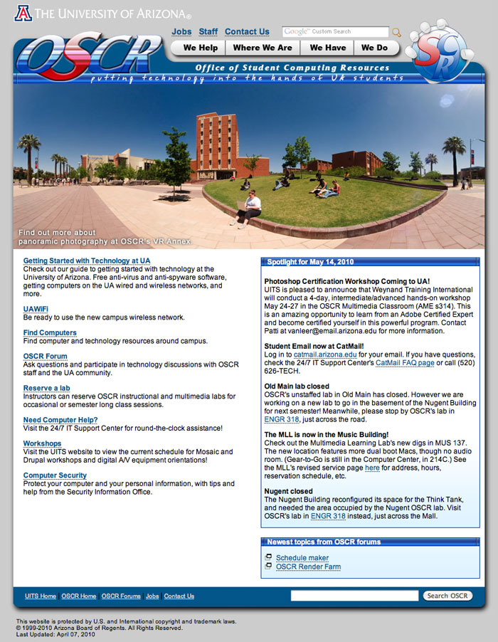
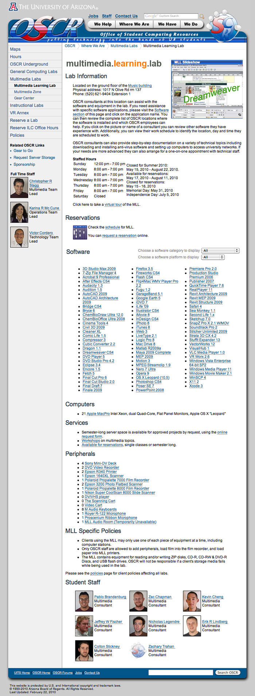

<- back to the portfolio
OSCR's mission statement was "Putting technology in the hands of UA students." They did
this in a variety of ways. They ran several computing labs around campus, from general
access labs, to multimedia labs with specialized hardware and software. They also ran the
Gear to Go program, which let students check out multimedia equipment including digital
video cameras, still cameras, and audio equipment. OSCR also employed nearly a hundred
student employees to run the various labs and services.

Organizing the many aspects of OSCR's services and presenting them to our audience on a
website was a big challenge. Equipment and software changed rapidly, as did student
employees and their schedules. We created a custom web application and content management
environment years before software like Drupal was mature. We had to do this in order to
allow many different people throughout OSCR to keep their information up to date. We
brought all that information together in many places on the websites, such as the following
location page.
